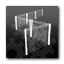

Grenzobjekt
Kategorie: Objekte
ID: BRDR
Beschreibung

Grenzobjekte können benutzt werden, um den Aktionsraum von Spielern einzuschränken.
Dabei wird eine nicht sichtbare Grenze gezogen. Jeder Spieler, der diese Grenze übertritt, wird nach einer Warnungszeit von 10 Sekunden getötet.
Anwendung
Grenzobjekte sollten - der Einheitlichkeit halber - jeweils am Spielfeldrand oben oder links platziert werden. Anschließend müssen sie per Set() eingestellt werden.
Set
void Set (int iDir, bool fKeepSpawns);
iDir:
Richtung, in welche das Grenzobjekt prüft (0: links, 1: rechts, 2: unten, 3: oben)
[opt] fKeepSpawns:
Standardmäßig werden alle Spawnpoints im abgesperrten Bereich gelöscht. Ist dieser Parameter true, wird dies nicht getan.
Limeox, November 2010